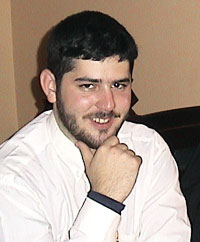
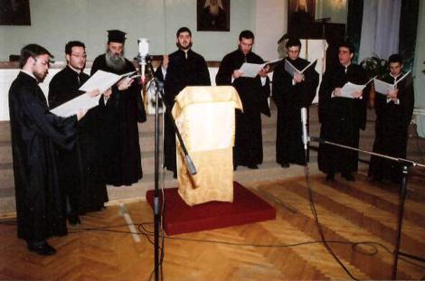

/ Konstantinos Fotopoulos
/ A young teacher of Byzantine Music

Konstantinos Fotopoulos was born in Athens in 1982. He is a graduate of the Athens
conservatory where he studied the Byzantine chant. Konstantinos' primary teacher
is Kyr-Basilaki Emmanouilidis, the Archon Lampadarios of the Great Church. In Athens
he was the Protopsalis of St. Catherine's church. In 2004 upon the invitation of
the Russian publishing house "Holy Mountain" he came to Moscow to head the newly-established
school of the Byzantine chant. The school at present has 70 students and the choir
formed on their basis regularly participates in the services in various churches
of Moscow. Currently Konstantinos is actively working on setting the Church Slavonic
texts to the Byzantine melodies.
A traditional chanter with a melodic voice, Kostas' chanting style imitates the
ecclesiastic yphos of Kyr-Basilaki Emmanoulidis and that of Athonite fathers. In
Greece he has his own choir, samples of whose chanting are given below.
We hope that Kostas' efforts will contribute to the further dissemination and popularisation
of the Byzantine chant in Russia.
Article on the Byzantine chant by K. Fotopoulos
in Greek [html]
Video excerpt
From the TV programme of the Russian channel TVC
[wmv, 4.5 Mb]
(July 2, 2005)
Transcript of the video
Constantine Fotopoulos is a protopsaltis, i.e. a head chanter of the church of St.
Catherine in Athens and a graduate of the department of the Byzantine music of Athens
conservatorium. When a year ago Constantine was invited to Russia to head the school
of Byzantine music organised by the Publishing house "Holy Mountain", neither he,
nor the organisers were sure that there would be many students. But his dedication
and knowledge gave hope.
Constantine Fotopoulos: The Byzantine ecclesiastic music cannot be called purely
national. It is an ancient music of the Orthodox worship. Currently it is chanted
in Serbia, Bulgaria and Romania, and moreover precisely observing the Byzantine
tradition. The Byzantine ecclesiastic music addresses religious feelings of an Orthodox
believer.
Currently in the school in Moscow there are 80 pupils, both children and adults.
Among them there are choirmasters, chanters, students, icon painters and even a
tiler. The studies are difficult, because unlike the 12 steps of an octave we are
used to, there are much more in the ancient Byzantine chant. One must not only distinguish
them, but also reproduce them correctly and one must chant not using the staff notation,
but special signs, neumes, which are even older than our "kriuki". Currently the
choir is participating in services in various churches of Moscow.
Ivan Litovchenko, an architect-designer, a student of the school: I got acquainted
with the Byzantine music when I was 11 or 12 and I immediately felt a strong attraction
to it and understood that I want to study it thoroughly, because for the first time
in my life I encountered that in the art, in the style of chanting, the spiritual
world and spiritual values could be expressed as deeply as they are expressed in
the Byzantine chant.

K. Fotopoulos' choir in Greece
Choir samples
Lenten Pentekostaria, Traditional melos
[mp3,
5.5 Mb]
Petros Bereketis' "Maria..", Third Mode
[mp3,
4.4 Mb]
Buy a double
CD of K. Fotopoulos' choir.